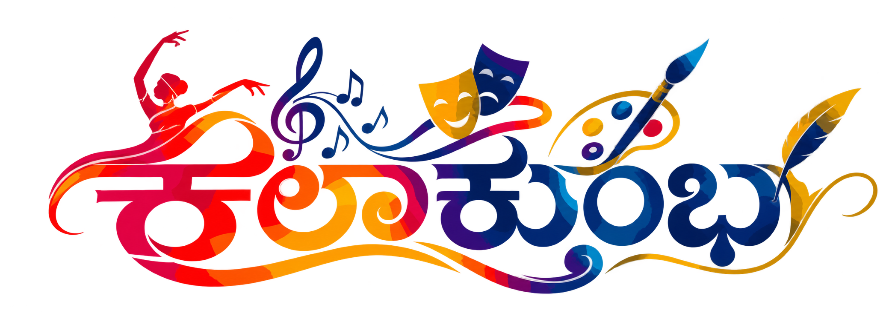

40ನೇ ಅಂತರ ವಿಶ್ವವಿದ್ಯಾಲಯ ಯುವಜನೋತ್ಸವ

ಹಲವು ಕಲೆಗಳು.
ಒಂದೇ ಸಂಭ್ರಮ.
ಕಲೆ, ಸಂಸ್ಕೃತಿ ಮತ್ತು ಯುವಜನರ ಸಂಗಮ.
AIU ನ ನೈಋತ್ಯ ವಲಯ ಯುವಜನೋತ್ಸವ 2026–27.
ಕಲಾಕುಂಭದಲ್ಲಿ ಸೃಜನಶೀಲತೆಯ ಸಂಭ್ರಮಕ್ಕೆ ಒಂದಾಗೋಣ.
ಸಂಭ್ರಮದ ಆರಂಭಕ್ಕೆ ಉಳಿದ ಸಮಯ
00ದಿನಗಳು
00ಗಂಟೆಗಳು
00ನಿಮಿಷಗಳು
00ಸೆಕೆಂಡುಗಳು
ಕಲಾಕುಂಭಕ್ಕೆ ನಿಮ್ಮ ಆಮಂತ್ರಣ
ದಿನಾಂಕಗಳನ್ನು ನೆನಪಿಡಿ
03 — 07 ಫೆಬ್ರವರಿ 2027
ನಾಸಿಕ್ನಲ್ಲಿ ಭೇಟಿಯಾಗೋಣ
ಸಂದೀಪ್ ವಿಶ್ವವಿದ್ಯಾಲಯ
ಮಹಿರಾವಣಿ, ತ್ರ್ಯಂಬಕ್ ರಸ್ತೆ, ನಾಸಿಕ್, ಮಹಾರಾಷ್ಟ್ರ, ಭಾರತ
ಶೀಘ್ರದಲ್ಲೇ
ಐದು ಕಲಾಪ್ರಕಾರಗಳು. ಒಂದೇ ಸೃಜನಶೀಲ ಚೇತನ.
ನೃತ್ಯಸಂಗೀತರಂಗಭೂಮಿಲಲಿತಕಲೆಸಾಹಿತ್ಯ
ವೇದಿಕೆ ಸಿದ್ಧವಾಗುತ್ತಿದೆ.
ಕಾರ್ಯಕ್ರಮ ಮತ್ತು ಭಾಗವಹಿಸುವಿಕೆಯ ವಿವರಗಳು ಶೀಘ್ರದಲ್ಲೇ.